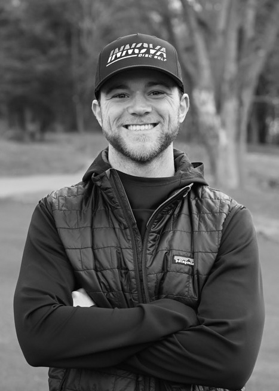
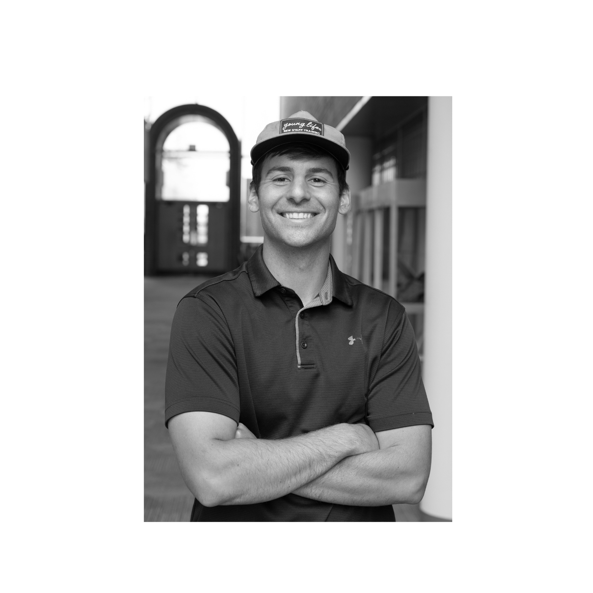
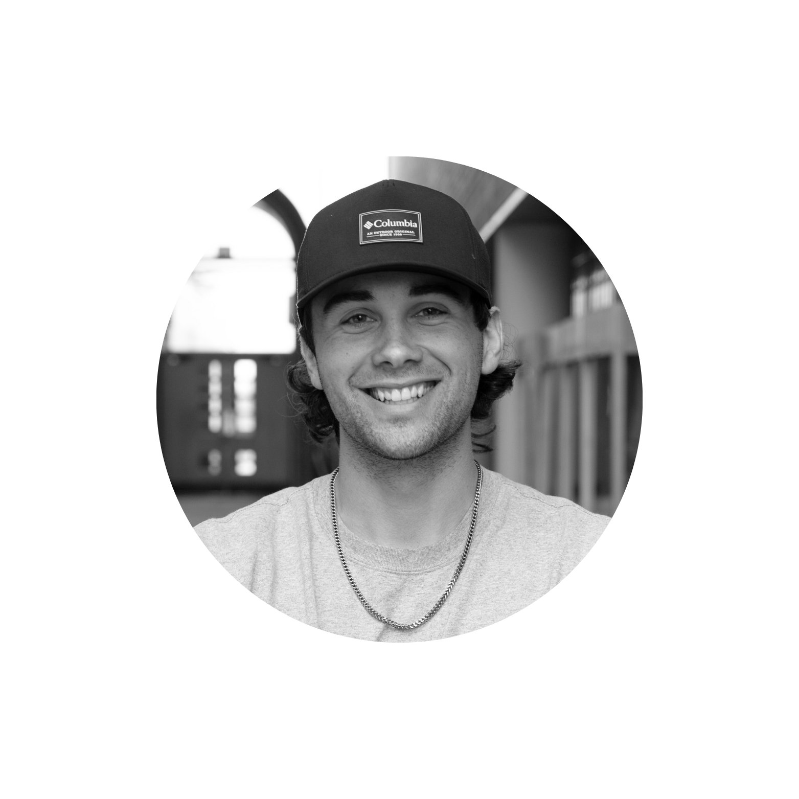

Why Radius exists and the vision behind it.
I didn't set out to build a disc golf app.
At the time, I was working on a completely different platform for the financial industry. But as I spent more time playing and getting involved in the disc golf community, something started to stand out.
There were gaps.
Coming from a golf background, I was used to seeing advanced tools, analytics, and clear pathways to improvement. In disc golf, that didn't really exist. As a competitive person, that frustrated me.
I didn't know where I stood in my game. I didn't know what I needed to improve. And the only real measure of progress was my final score.
There was no system. No feedback loop. No real way to get better with intention.
That's when the idea for Radius started to take shape.

Radius wouldn't be possible without the people who share the vision. Nick and Ben saw the same potential in what disc golf could become and are excited to be part of this journey from the beginning.


I had some exposure to software through a friend from church, but building an app like this was completely new territory. What started as a simple idea quickly grew into something much bigger.
The hardest part wasn't just building it — it was realizing how much the app could become. There were so many ways Radius could help players improve, connect, and experience the game differently. Turning that vision into something real took time, iteration, and a lot of persistence.
Radius is designed to bring the disc golf community together — helping players meet, compete, and share experiences — while also giving them the tools to actually improve. To understand their game. To make smarter decisions. To see real progress.
If Radius succeeds, disc golf won't just grow — it will evolve. It will become more analytical, more intentional, and more advanced — just like other sports that have embraced technology.
I care about this because disc golf has quickly become one of my favorite parts of life.
The people.
The competition.
The community.
I want to help grow that. I want to help players get better. I want to help the community expand. And I want to be part of pushing the sport forward.
That's why Radius exists.
"I sought the Lord, and He heard me, and delivered me from all my fears. They looked to Him and were radiant, and their faces were not ashamed. This poor man cried out, and the Lord heard him, and saved him out of all his troubles. The angel of the Lord encamps all around those who fear Him, and delivers them."
Psalm 34:4-7